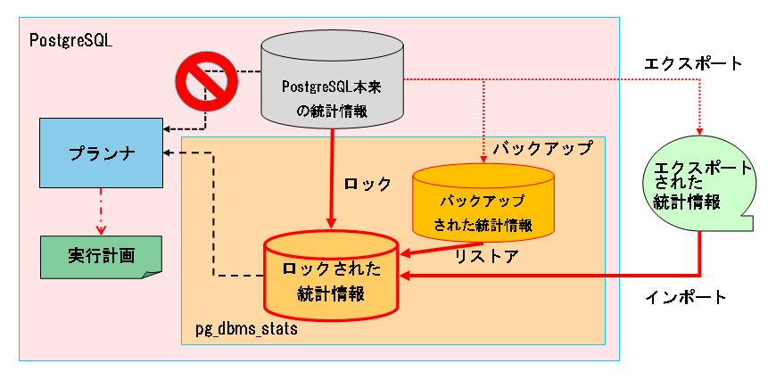

pg_dbms_stats -- controls planner behavior by giving stored table statistics
PostgreSQL manages table statistics from sampled values of tables and indexes by ANALYZE command. Query optimizer calculates execution plan costs based on the statistics and chooses the plan with the lowest cost. On the mechanism, inaccuracy of statisctics or sudden change of data amount or distribution lets the query optimizer make unexpected or unwanted change of execution plan.
pg_dbms_stats is a extension that try to stabilize execution plan avoiding such kind of disturbance. It tries to stabilize planning by providing predefined "dummy" statistics instead of original values for requests from the planner. It is intended to be used by those who want to lower the risk that a unexpected change of execution plan leands to bad performance degradation on a system.
pg_dbms_stats can fix the statistics of the following database objects.
There are eight kind of operations pg_dbms_stats offers for manipulating statistics used by planner. All operations other than export are executed via SQL functions。See TARGET OBEJCT LIST for details.
The objects to store their statistics are specified by the unit of the whole databsae, schema, table and column. For example, specify the schema when you want to store the statistics of all tables and columns in a schema. To keep things simple, it would be a good practice to specify the target objects in rather large sized unit like database or schema.
The backup history is seen in dbms_stats.backup_history table. The details are seen in TABLES.
Resotore a backuped statistics for the specified objects. Planner continues to see the same statistics for others. There are following two ways to specify a backup.
The backup ID must be specified to leave at least one database-wise backup but this restriction can be omitted by giving true as the "force" parameter.
The lock units are one of database, schema, table or column.
Planner uses the "real" statitics stored in pg_class and pg_statistic for an object after unlocking of the object. The unlock unit is one of database, schema table and column. Unlock is allowed to execute with arbitrary unit unrelated to the unit specified as of locking.
Dropping a table or a column doesn't delete locked statistics automatically. This function removes such orphan locked statistics at once.
Choose one of plain or effective according to the purpose. The output directory must be writable by the user which is running the server.
You can find the sample files in the "extension" subdirectory in the directory shown by "pg_config --docdir".
The load unit is one of database, schema, table and column. The data in the import file that is out of the specified load unit is excluded on loading. The import file must be placed so that the server can read it.
pg_dbms_stats can be installed in the ordinary method to load an extension.
Just type "make" after setting PATH environment variable so that the right pg_config is executed. Then type "make install"by the same user with the installed server.
pg_dbms_stats is a PostgreSQL extension, which requires "CREATE EXTENSION" to be executed.
Extension itself is dropped by DROP EXTENSION but the dbms_stats is left in place. Drop it manually if no longer needed.
pg_dbms_stats is dynamically loadable using LOAD command. If you want enable pg_dbms_stats automatically in all sessions, add "pg_dbms_stats" to shared_preload_libraries in postgresql.conf then restart the server.
CAVEAT: You will see the following lines in the log file for every statement by just loading pg_dbms_stats but not registering as an extension on the database. Make sure regstering on the database before you load pg_dbms_stats.
test=# SELECT * FROM test;
ERROR: schema "dbms_stats" does not exist
LINE 1: SELECT relpages, reltuples, curpages FROM dbms_stats.relati...
^
QUERY: SELECT relpages, reltuples, curpages FROM dbms_stats.relation_stats_locked WHERE relid = $1
test=#
To inactivate loaded pg_dbms_stats, set pg_dbms_stats.use_locked_stats to off.
test=# SET pg_dbms_stats.use_locked_stats TO off; SET test=# SELECT * FROM test; -- generates a plan based on the real statistics ... test=# SET pg_dbms_stats.use_locked_stats TO on; SET test=# SELECT * FROM test; -- generates a plan based on the locked statistics ...
To turn off pg_dbms_stats on all sessions, set pg_dbms_stats.use_locked_stats to off in postgresql.conf then reload the config, or use ALTER SYSTEM for PG9.4 or later.
Perform the following steps to uninstall pg_dbms_stats. dbname is the name of the databases on which pg_dbms_stats is regsistered as an extension.
$ cd pg_dbms_stats $ su # make uninstall
$ psql -d dbname -c "DROP EXTENSION pg_dbms_stats"
$ psql -d dbname -c "DROP SCHEMA dbms_stats"
There are roughly three kind of operation styles. Mainly-backing-up, mainly-locking, mainly-exporting. Assume mainly-backup style if you are not sure which one of them fits your requirement.
Take daily backups using backup_xxx() functions and restore only required statistics when you face a problem using restore_xxx() functions. Take database-wise backup if you don't have special requirements.
Restore the backed up statistics by specifying by backup ID or timestamp. Use backup ID unless you have difficulties to identify the target ID.
-- Take a daily backup then ANALYZE.
test=# SELECT dbms_stats.backup_database_stats('any comment');
backup_database_stats
-----------------------
1
(1 row)
test=# ANALYZE;
ANALYZE
test=#
-- Restore and lock the statistics at the same time yesterday. test=# SELECT dbms_stats.restore_database_stats(now() - '1 day');
CAVEAT: As explained above, if there are no backups before the specified time for some columns or tables planner continues to see the statistics before the restoration. This might lead to unexpected behavior of planner.
The following is an example of restore operation of a statistics backup. The "time" column shows the time of the backup.
test=# SELECT b.id, b.time, r.relname
FROM dbms_stats.relation_stats_backup r
JOIN dbms_stats.backup_history b ON (r.id=b.id)
ORDER BY id;
id | time | relname
----+------------------------+-----------------
4 | 2012-01-01 00:00:00+09 | public.droptest
5 | 2012-01-02 12:00:00+09 | public.test
(5 rows)
test=# SELECT dbms_stats.restore_database_stats('2012-01-03 00:00:00+09');
restore_database_stats
------------------------
test
droptest
(2 rows)
test=#
Execute lock_xxx() functions to just lock the statistics at the service start.
test=# SELECT dbms_stats.lock_database_stats(); lock_database_stats --------------------- droptest test (2 rows) test=#
To export the statistics under operation then import into another database, craft and execute a script based on the export_xxx_stats-
$ cd pg_dbms_stats
$ psql -d test -f export_effective_stats-10.sql
BEGIN
COMMIT
$ psql -d test2 -c "SELECT dbms_stats.import_database_stats('$PWD/export_stats.dmp')"
import_database_stats
-----------------------
(1 row)
$
CAVEAT: The base script uses binary format of COPY command so import might fail if the format is incompatible with the export side. See COPY command for details.
There are some important poins and restrictions to use pg_dbms_stats.
pg_dbms_stats lets planner to see dummy statistics instead of the real statistics it usually sees and stabilizes the execution plans. There are three sourcesof the dummy statistics.
pg_dbms_stats manages statistics using several tables and files.
pg_dbms_stats doesn't change the real statistics shown in pg_class or pg_statistic catalogs.
pg_dbms_stats manages statistics by updating the content of the statistics tables mentioned above. pg_dbms_stats provides the management SQL functions to update the tables keeping consistency. Manually manipulating the tables is discouraged.
Planner calculates the cost of an execution plan based on the following statistics items or the real values. pg_dbms_stats locks or stores all of these statistics items. It even conceals the change of the size of relation files by replaceing with the size at the time of locked or backed-up.
Some columns in the statistics tables are of anyarray type thus they are inoperable from the genuine SQL interface. pg_dbms_stats has helper functions to manipulate the values of the columns since 1.3.7. This feature doesn't offer any fool-proof protection and improper manipulation not only lets planner do wrong but easily leads to a server crash. Be careful in using this feature.
You can inject values by the following three steps.
You can do that by invoking anyarray_basetype() function giving the name of the target statistics column in column_stats_locked table.
=# SELECT dbms_stats.anyarray_basetype(stavalues1) FROM dbms_stats.column_stats_locked WHERE starelid = xxxx AND staattnum = x; anyarray_basetype ------------------- float4 (1 row)
A helper function and a cast required to inject dummy statistics are generated by invoking prepare_statstweak() function with giving the target base type as a text. The stuff is removed by drop_statstweak().
=# SELECT dbms_stats.prepare_statstweak('float4');
-----------------------------------------------------------------------------------
(func dbms_stats._realary_anyarray(real[]), cast (real[] AS dbms_stats.anyarray))
(1 row)
Everything is ready. The following statement updates the dummy statistics item.
=# UPDATE dbms_stats.column_stats_locked
SET stavalues1 = '{1.1,2.2,3.3}'::float4[]
WHERE starelid = xxxx AND staattnum = x;
UPDATE 1